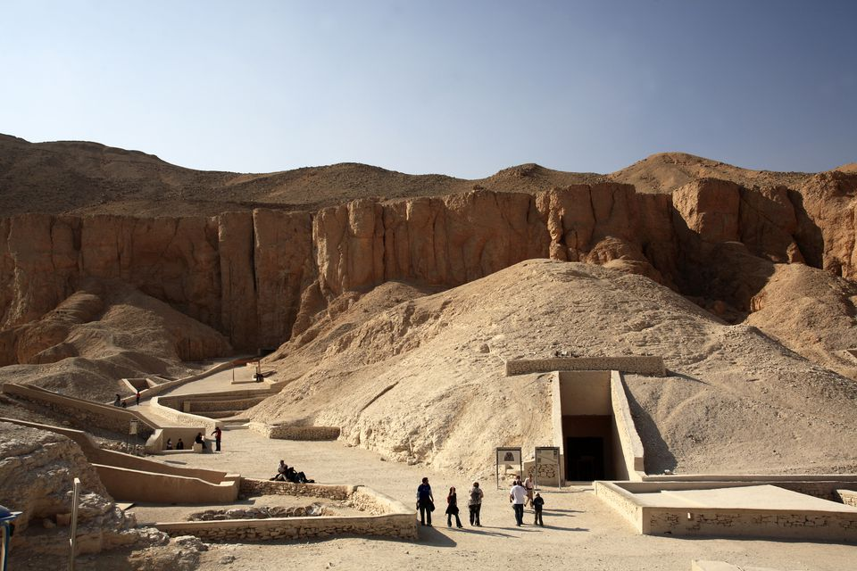
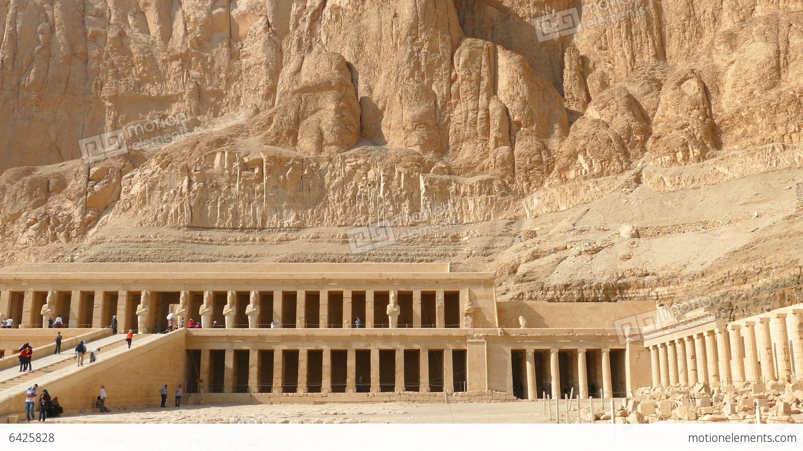
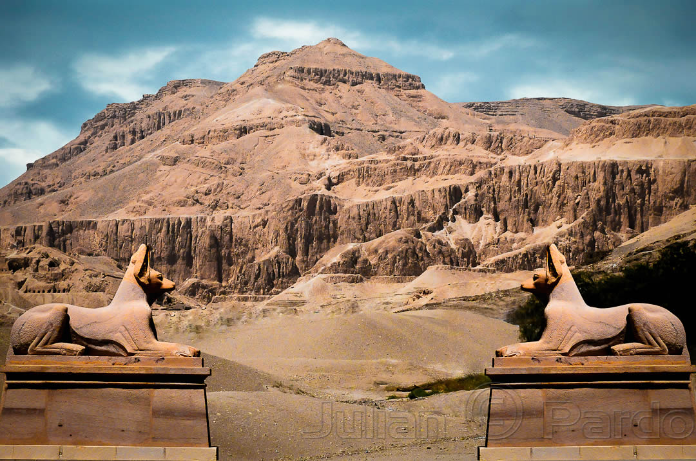

With a name that encapsulates all of the grandeur of Egypt’s ancient past, the Valley of the Kings is one of the country’s most popular tourist destinations. It’s located on the west bank of the Nile, directly across the river from the ancient city of Thebes (now known as Luxor). Geographically, the valley is unremarkable; but beneath its barren surface lie more than 60 rock-cut tombs, created between the 16th and 11th centuries BC to house the deceased pharaohs of the New Kingdom.

After years of extensive study, most historians believe that the Valley of the Kings was used as a royal burial ground from approximately 1539 BC to 1075 BC — a period of almost 500 years.

Tombs in both valleys would have been constructed and decorated by skilled workers living in the nearby village of Deir el-Medina. Such was the beauty of these decorations that the tombs have been a focus for tourism for thousands of years. Inscriptions left by the Ancient Greeks and Romans can be seen in several of the tombs, especially that of Ramesses VI (KV9) which has over 1,000 examples of ancient graffiti